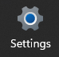
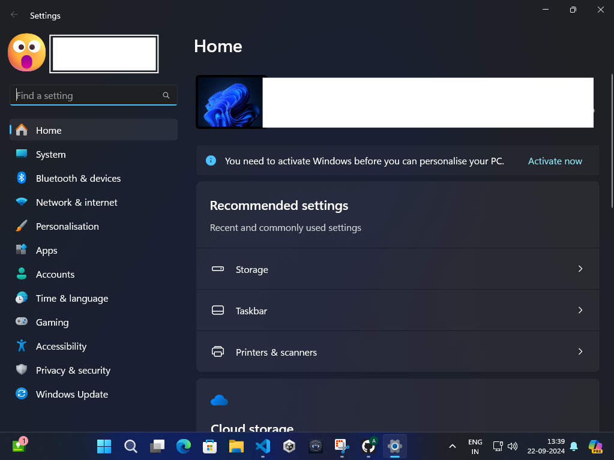

Discover what's happening on the planet.
View Top News Main Page
Microsoft's gradual removal of the traditional Control Panel in favor of the Settings
app is
part of its long-term strategy to modernize Windows, streamline user experience, and
simplify system management. This shift began in Windows 8 and has progressed through
Windows
10 and Windows 11. Here are the key reasons and motivations behind Microsoft's
decision:

1. Modernized User Interface
Consistency with Modern Design: Microsoft aims to align the entire Windows interface
with a
more modern, clean, and user-friendly design. The Control Panel, which has been around
since
Windows 95, has a relatively outdated and less intuitive interface compared to the newer
Settings app.
Unified Experience: The Settings app is designed with modern UI principles, making it
more
visually appealing and easier to navigate, especially for touchscreens and mobile
devices.
This fits with Microsoft's broader strategy of unifying the user experience across
different
device types (PCs, tablets, and hybrid devices).
2. Simplification and Streamlining
Reduced Complexity: The Control Panel contains a mix of older and newer settings, which
can
be confusing for users. By migrating all settings to one app, Microsoft simplifies how
users
interact with system preferences, making it more intuitive, especially for non-technical
users.
One-stop Location: Having both the Control Panel and the Settings app created
redundancy. By
consolidating everything into the Settings app, Microsoft is streamlining the process,
so
users don’t have to wonder which one to use for managing specific features.
3. Improved Performance and Efficiency-

Faster Navigation: The Settings app is optimized for speed, with faster access to key
functions compared to the older, sometimes sluggish Control Panel interface.
Search Integration: The Settings app integrates seamlessly with the Windows search
function,
allowing users to quickly find specific settings without navigating through layers of
menus.
The Control Panel’s search was slower and less intuitive.
4. Focus on New Technologies
Adoption of UWP (Universal Windows Platform): The Settings app is built on UWP, a
framework
that supports more modern, lightweight, and secure apps. This is part of Microsoft's
broader
push toward UWP and cloud integration.
Compatibility with Cloud Services: The modern Settings app is designed to better
integrate
with cloud-based services, such as OneDrive, Windows Update for Business, and Microsoft
365,
giving users easier access to cloud management features.
5. Security and Future-proofing
Security Improvements: The Settings app is built with modern security considerations in
mind, with better support for encryption, network management, and privacy settings
compared
to the legacy Control Panel.
Legacy Code Issues: The Control Panel contains legacy code that dates back several
decades,
making it more difficult for Microsoft to maintain and secure. Migrating settings to a
newer
framework reduces potential security vulnerabilities and technical debt.
6. Feedback and Usability
User Feedback: Microsoft has been collecting user feedback from Windows Insider Program
participants and telemetry data. Over time, they’ve been fine-tuning the Settings app to
better cater to users’ needs while phasing out the older Control Panel features.
Progressive Transition: Microsoft is not immediately removing the Control Panel, but
phasing
it out progressively as equivalent functionality becomes available in the Settings app.
This
ensures that users aren't suddenly forced to adopt a new interface without proper
support or
preparation.
7. Support for New Features
More Granular Control: The Settings app has been designed to support more granular
control
over system components, including updates, notifications, and hardware settings. This
was
not as easily achievable in the older Control Panel.
New Capabilities: The Settings app supports new capabilities, such as system-wide dark
mode,
advanced networking settings, and seamless device integration, which the Control Panel
wasn't designed to handle.
8. Enterprise and IT Management
Better Management Tools: For IT professionals and enterprise users, the Settings app
provides more streamlined tools to manage updates, system configurations, and policies
across multiple devices. It also integrates with enterprise management systems like
Microsoft Intune and Azure Active Directory more efficiently.
Future-ready Management: Microsoft’s new approach better aligns with modern IT
infrastructures, particularly those that are cloud-based or involve hybrid management
between on-premises and cloud environments.
Conclusion
The gradual phasing out of the Control Panel is driven by Microsoft’s desire to:
Create a more modern, streamlined, and unified user experience.
Improve system performance, security, and usability.
Integrate better with cloud services and modern management frameworks.
While the transition may take time, with certain settings still housed in the Control
Panel,
it reflects Microsoft’s long-term vision of a more integrated and intuitive operating
system
for both personal and enterprise users.
Welcome to Newseepie, your ultimate source for the latest and greatest news you like in their simplest form. Our goal is to provide detailed insights into the most exclusive and relevant news today. Which is useful for you.
If you want to get a website created for your business contact us. For more information, please reach out to us at info@newseepie.com. Created by Shine Softwares Limited.